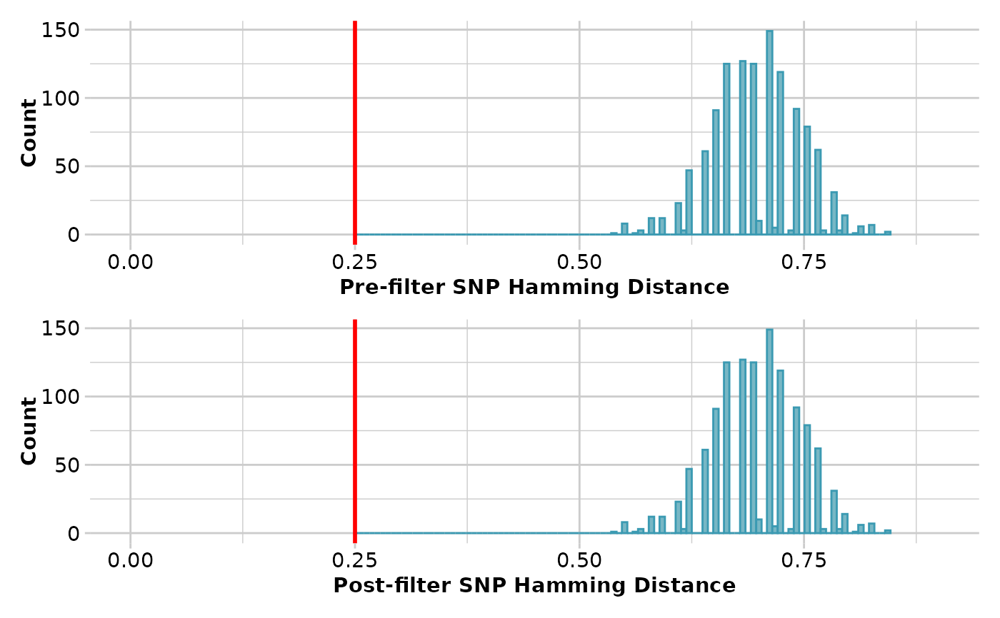

Filters loci based on pairwise Hamming distance between sequence tags
gl.filter.hamming.RdHamming distance is calculated as the number of base differences between two sequences which can be expressed as a count or a proportion. Typically, it is calculated between two sequences of equal length. In the context of DArT trimmed sequences, which differ in length but which are anchored to the left by the restriction enzyme recognition sequence, it is sensible to compare the two trimmed sequences starting from immediately after the common recognition sequence and terminating at the last base of the shorter sequence.
Usage
gl.filter.hamming(
x,
threshold = 0.2,
rs = 5,
taglength = 69,
plot.out = TRUE,
plot_theme = theme_dartR(),
plot_colors = two_colors,
pb = FALSE,
save2tmp = FALSE,
verbose = NULL
)Arguments
- x
Name of the genlight object containing the SNP data [required].
- threshold
A threshold Hamming distance for filtering loci [default threshold 0.2].
- rs
Number of bases in the restriction enzyme recognition sequence [default 5].
- taglength
Typical length of the sequence tags [default 69].
- plot.out
Specify if plot is to be produced [default TRUE].
- plot_theme
Theme for the plot. See Details for options [default theme_dartR()].
- plot_colors
List of two color names for the borders and fill of the plots [default two_colors].
- pb
Switch to output progress bar [default FALSE].
- save2tmp
If TRUE, saves any ggplots and listings to the session temporary directory (tempdir) [default FALSE].
- verbose
Verbosity: 0, silent or fatal errors; 1, begin and end; 2, progress log ; 3, progress and results summary; 5, full report [default 2, unless specified using gl.set.verbosity].
Details
Hamming distance can be computed by exploiting the fact that the dot product of two binary vectors x and (1-y) counts the corresponding elements that are different between x and y. This approach can also be used for vectors that contain more than two possible values at each position (e.g. A, C, T or G).
If a pair of DNA sequences are of differing length, the longer is truncated.
The algorithm is that of Johann de Jong
https://johanndejong.wordpress.com/2015/10/02/faster-hamming-distance-in-r-2/
as implemented in utils.hamming.
Only one of two loci are retained if their Hamming distance is less that a specified percentage. 5 base differences out of 100 bases is a 20
Author
Custodian: Arthur Georges -- Post to https://groups.google.com/d/forum/dartr
Examples
# SNP data
result <- gl.filter.hamming(testset.gl, threshold=0.25, verbose=3)
#> Starting gl.filter.hamming
#> Processing genlight object with SNP data
#> Note: Hamming distance ranges from zero (sequence identity)
#> to 1 (no bases shared at any position)
#> Note: Calculating pairwise Hamming distances between trimmed
#> reference sequence tags
#> Filtering loci with a Hamming Distance of less than 0.25
#> Deleting: 100050129-31-G/A 100097264-42-C/G
#> Deleting: 100051015-65-C/T 100112469-19-C/T
#> Deleting: 100053261-8-A/C 100053406-30-A/C
#> Deleting: 100054169-19-T/C 100055200-14-A/G
#> Deleting: 100055200-14-A/G 100056106-52-A/G
#> Deleting: 100055368-8-T/A 100113705-43-A/T
#> Deleting: 100096972-20-A/G 100097103-16-G/A
#>

#> Summary of filtered dataset
#> Initial No. of loci: 255
#> Hamming d > 0.25 = 17 bp
#> Loci deleted 7
#> Final No. of loci: 248
#> No. of individuals: 250
#> No. of populations: 30
#> Completed: gl.filter.hamming
#>